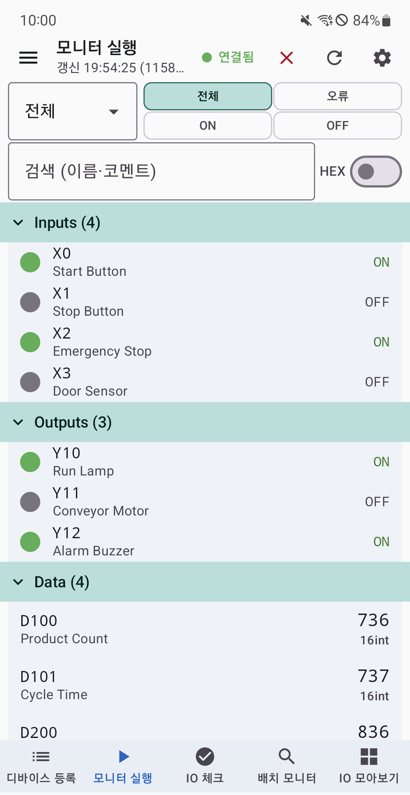
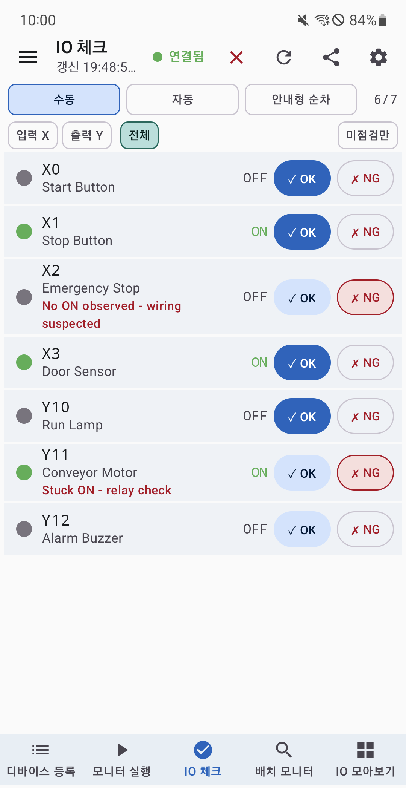
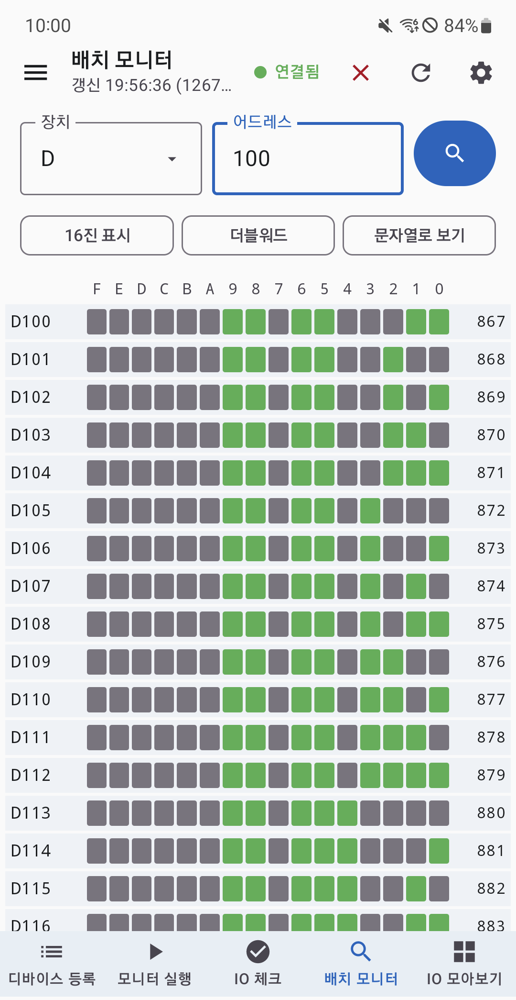
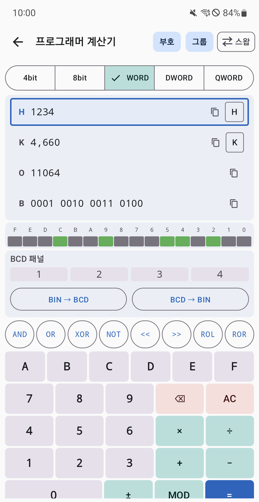

시운전과 배선 점검
X/Y 입출력을 수동, 자동, 안내형 순차 모드로 확인하고 배선 맞바꿈과 단락을 점검합니다.
Mitsubishi MELSEC PLC에 Ethernet으로 직접 연결해 입출력 상태를 확인하세요. IO 체크부터 실시간 모니터링, 배치 조회, 프로젝트 이동과 현장 계산기까지 한 앱에 담았습니다.


MADE FOR FIELD WORK
PLC 파라미터에 맞춰 연결하고, 현장에서 필요한 디바이스만 등록해 값과 점검 결과를 바로 확인할 수 있습니다.
X/Y 입출력을 수동, 자동, 안내형 순차 모드로 확인하고 배선 맞바꿈과 단락을 점검합니다.
비트 ON/OFF와 워드 값을 자동 폴링하며 10진, 16진, 실수, 문자열 등 필요한 형식으로 봅니다.
프로젝트를 내보내고 가져오거나 공유해 다른 기기와 작업 구성을 이어서 사용합니다.
CAPABILITIES
MC Protocol과 SLMP 통신부터 데이터 정리와 계산까지 실제 현장에서 자주 쓰는 작업을 연결했습니다.
등록한 X/Y 입출력을 하나씩 확인합니다. 자동 또는 안내형 순차 점검과 배선 맞바꿈, 단락 감지로 누락을 줄이고 결과를 CSV와 요약 리포트로 공유할 수 있습니다.
X/Y/M/L/B 비트와 D/W/ZR 워드를 자동 폴링합니다. 검색, 그룹, 상태 필터와 통신 오류 격리로 필요한 신호에 집중할 수 있습니다.
주소를 직접 입력해 여러 값을 표로 한 번에 읽고, 입력과 출력 신호를 구분한 카드로 설비 I/O를 빠르게 파악합니다.
GX Works2 프로젝트(.gxw) 또는 코멘트/래더 CSV에서 디바이스를 가져옵니다. 종류별 또는 POU별 그룹, POU 트리 미리보기, 더블코일 경고와 가져오기 선택 기능을 제공합니다.
가져오기 결과는 호환 편의 기능이므로 현장 적용 전에 반드시 원본과 대조해야 합니다.
여러 프로젝트를 저장하고 .plc 파일로 다른 Android 기기에 옮깁니다. 등록한 디바이스와 그룹 구성을 그대로 이어갈 수 있습니다.
진법과 비트 연산, 전자기어비, 원둘레, 삼각함수, 아날로그 스케일, 체크섬/CRC-16과 ASCII 변환 도구를 내장했습니다.
APP SCREENS
IO 체크와 모니터링부터 배치 조회, 계산 도구까지 같은 프로젝트 흐름 안에서 사용할 수 있습니다.


MC Protocol과 SLMP 포트, TCP/UDP, 프레임과 데이터 형식을 확인합니다.
PLC IP와 포트, 통신 방식을 입력하고 프로젝트를 선택합니다.
직접 또는 자동 등록하거나 GX Works 자료에서 주소와 코멘트를 가져옵니다.
실시간 값을 확인하고 현장 점검 결과를 기록하고 공유합니다.
READ-ONLY BY DESIGN
PLC 업무수첩은 디바이스 값을 읽어 표시하는 모니터링 앱입니다. 제어 또는 쓰기 명령으로 설비 상태를 변경하지 않습니다.
로컬 프로젝트연결 설정과 프로젝트는 사용자 기기에서 관리하며 개발자 서버로 전송하지 않습니다.
현장 기능 통합모니터링, IO 체크, 프로젝트 관리, LOG VIEWER와 계산 도구를 한 앱에서 제공합니다.
독립 서드파티 앱Mitsubishi Electric Corporation과 제휴, 보증 또는 승인 관계가 없으며 관련 명칭은 호환성 표시 목적으로만 사용합니다.
지원 환경 Android 8.0(API 26) 이상연결 Ethernet(TCP / UDP)언어 한국어, English, 日本語
START CHECKING
PLC 업무수첩을 Google Play에서 무료로 설치할 수 있습니다.